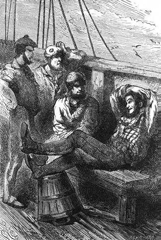

Mys obeplut. – Na předním výstupku. – Professor Joe přednáší o světopise. – O řízení balonů. – O hledání vzdušných proudů. – Heureka.
Resolute tíhl rychle k mysu Dobré naděje; pohoda vytrvala, jakkoli moře dmulo se silněji.
Dne 30. března, za dvacetsedm dní po odjezdě z Londýna, bylo na obzoru rozeznati obrysy Tabulové hory; Kapské město, rozložené na úpatí amfiteatru z pahorkův, objevilo se skrze námořský dalekohled, a za nedlouho spustil Resolute kotvu v přístavě. Než velitel zastavil tam jen proto, aby se zásobil uhlím, na kteroužto práci vystačil den; nazejtří zamířila loď na jih, aby obeplula polední výběžek Afriky a vjela do průlivu Mozambického.
Joe nekonal první cestu po moři, pročež netrvalo dlouho, a zdomácněl na lodi. Kde kdo mu by nakloněn pro jeho upřímnost a dobrou míru. Proslulost jeho pána odrážela se valnou měrou i na něj. Poslouchali ho jako věštce, i nemýlil se více než kterýkoli jiný.
Zatím pak, co doktor popisoval a vykládal v kroužku důstojnickém, trůnil Joe na předním výstupku a spřádal historii svým způsobem, což ostatně dělali největší dějepisci všech dob.
Přirozenou měrou byla na přetřesu pověstná cesta. Joa stálo mnoho práce, nežli vštípil zpurným duchům přesvědčení o podniku, leč jakmile plavci uvěřili, nezdálo se nic nemožným jich obrazivosti roznícené vyprávkou Joovou. – Omámivý vypravovatel namlouval svým posluchačům, že po této cestě dojde ještě na jiné. Byl to jen začátek dlouhé řady nadlidských podniků.
„Hleďte, přátelé, když člověk okusí tento druh pohybu, nemůže se již obejít bez něho; na své příští výpravě pak nepůjdeme stranou, nýbrž půjdeme přímo před sebe a budeme pořád stoupat.“
„Aj! tu se dostanete na měsíc,“ prohodil užaslý posluchač.
„Na měsíc!“ odvětil rychle Joe; „ne, na mou věru, to je příliš všední! kde kdo chodí na měsíc. Mimo to není tam vody a člověk je nucen vzít jí s sebou velké zásoby a také vzduch v lahvích, aby bylo co dýchat.“

I smáli se, leč mu věřili.
„Dobrá! je-li pak tam gin?“[25] ozval se plavec, jenž byl náramným milovníkem tohoto nápoje.
„Ještě ne, milý brachu. Ne, s měsícem není nic; ale budeme se procházet po těch hezkých hvězdách, po těch rozkošných oběžnicích, o kterých mi pán tolikrát vyprávěl. Tak se nejprve podíváme na Saturna…“
„Je-li to ten, co má prsten?“ otázal se stanovištník.
„Ano! snubní prsten. Jenom že se neví, kam se poděla jeho žena!“
„Jakže! vy půjdete až tak vysoko?“ pravil zaražený plavčík. „Což je váš pán ďábel?“
„Ďábel? Na to je příliš dobrý!“
„A po Saturnovi?“ zeptal se jeden z nejzvědavějších v posluchačstvu.
„Po Saturnovi? No, zavítáme návštěvou na Jupitera; to je vám taková směšná země, kde má den jenom devět hodin a půl, což je vhod lenochům, a kde roky na příklad trvají dvanáct let, což je prospěšno lidem, kterým zbývá už jen šest měsíců života. Tím se jich jsoucnost trochu prodlouží!“
„Dvanáct let?“ divil se plavčík.
„Ano, hochu; v tom kraji by tebe matka ještě kojila, a onen staroch tam dole, jemuž jde na padesátku, byl by půlpátaletým klučíkem.“
„To není víře podobno!“ zvolal přední výstupek jako jedním hlasem.
„Holá pravda,“ odvětil Joe ubezpečile. „Ale co chcete? Když člověk pořád živoří na tomto světě, nenaučí se ničemu, zůstane nevědomým jako morče. Zajděte si na Jupitera a uvidíte! Na příklad je tam nahoře třeba stejnokroje, neboť jsou souputníci, na nichž není volno!“
I smáli se, leč napolo mu věřili; i vyprávěl jim o Neptunovi, kde jsou námořníci vítáni, a o Marsovi, kde si vojáci vykračují po chodníku, což je na konec obtížné. Merkur pak je špatným světem, nic než zloději a kupci sobě navzájem tak podobní, že jest těžko od sebe je rozeznat. A posléze podal jim o Venuši obraz v pravdě úchvatný.
„A až se vrátíme z té výpravy,“ dokládal roztomilý vypravovatel, „budeme vyznamenáni jižním křížem, který září tam nahoře v knoflíkové dírce dobrého Pánaboha.“
„A půjdete si ho zasloužit!“ pravili plavci.
Takhle uplývaly veselými hovory dlouhé večery na předním výstupku. A zatím braly se poučné rozmluvy doktorovy svým během.…
Jednou mluvilo se o řízení balonův, a Fergusson byl požádán, aby pronesl svůj soud v této věci.
„Nevěřím“ pravil, „že se podaří říditi ballony. Znám všecky soustavy, s nimiž se dály pokusy, nebo které byly navrženy; ani jedna nedodělala se zdaru, ani jednu nebylo lze uvésti ve skutek. Chápete zajisté, že jsem se zabýval touto věcí, na níž mi tolik sešlo; než nebyl jsem s to, abych ji rozřešil prostředky, jichž poskytují nynější mechanické vědomosti. Bylo by třeba vynalézti motor mimo obyčej mohutný a nad možnost lehký. A přece nebude lze odolati proudům poněkud silnějším! Ostatně čelily až posud veškery pokusy spíše k řízení loďky než balonu. To je chyba.“
„Nicméně“ ozvala se námitka, „jest velká souvislost mezi vzducholodí a vodní lodí, která se řídí po libosti.“
„Nikoliv,“ odpověděl doktor Fergusson, „souvislost ta je nepatrná, nebo není žádné. Vzduch je neskonale méně hustý nežli voda, v níž je loď ponořena toliko na polo, kdežto vzducholoď plyne celá v povětří a trvá v nehybnosti vzhledem k okolnímu vzduchu.“
„Máme tedy za to, že větroplavba promluvila poslední slovo?“
„Nikterak! Nikterak! Dlužno hledati jinou věc, a nelze-li říditi balon, jde aspoň o to, aby se udržel v příznivých proudech vzduchových. Čím výše se stoupá, tím větší nabývají stejnoměrnosti a mají stálejší směr: nejsouť jim na závadu údolí a hory, prostupující povrch zeměkoule, a v tom, jak víte, spočívá hlavní příčina změn větru, a nerovnosti jeho vanu. Jakmile pak budou tato pásma určena, bude balonu jen zachytiti proudy, jichž bude potřebovati.“
„Aby se však do nich dospělo,“ namítal velitel Pennet, „bude třeba neustále vystupovati nebo sestupovati. V tom vězí háček, milý doktore.“
„A proč, milý veliteli?“
„Rozumějme si: to bude obtíží a překážkou toliko dlouhým cestám a nikoli pouhým povětrným procházkám.“
„A z jaké příčiny, prosím?“
„Poněvadž lze vystoupiti jen s tou podmínkou, že se vyhodí přítěž, sestoupiti pak lze jen s tou podmínkou, že se vypustí plyn, a takovou měrou jsou zásoby plynu a přítěže brzy vyčerpány.“
„Milý Pennete, právě jen o to běží a o nic jiného. V tom spočívá jediná obtíž, kterou dlužno vědě překonati. Nejde o řízení balonů; jde jen o to, aby je bylo možno hnáti shora dolů beze ztráty plynu, který jest jich silou, jich krví, jich duší, ač lze-li se tak vyjádřiti.“
„Máte pravdu, milý doktore, ale tato obtíž není dosud rozřešena, tento prostředek není dosud nalezen.“
„Prosím za odpuštění, jest nalezen.“
„Kým?“
„Mnou!“
„Vámi?“
„Chápete zajisté, že bych se jinak nebyl odvážil tohoto přeletu přes Afriku balonem. Než by uběhly dvacetčtyři hodiny, byl bych hotov s plynem.“
„Avšak o tom jste se v Anglii nezmínil.“
„Nikoli. Nedbal jsem pouštěti se na veřejnosti do přetřesů. To jsem pokládal zbytečným. Vykonal jsem potají přípravné zkoušky a byl jsem spokojen; nebylo mi tudíž třeba někomu se s nimi svěřovat.“
„Nuže, milý Fergussone, smíme-li se tázati na vaše tajemství?“
„Tu je máte, pánové, a můj prostředek jest prajednoduchý.“
Pozornost posluchačů byla napiata do vyšší míry, a doktor jal se pokojně vykládati v tato slova: